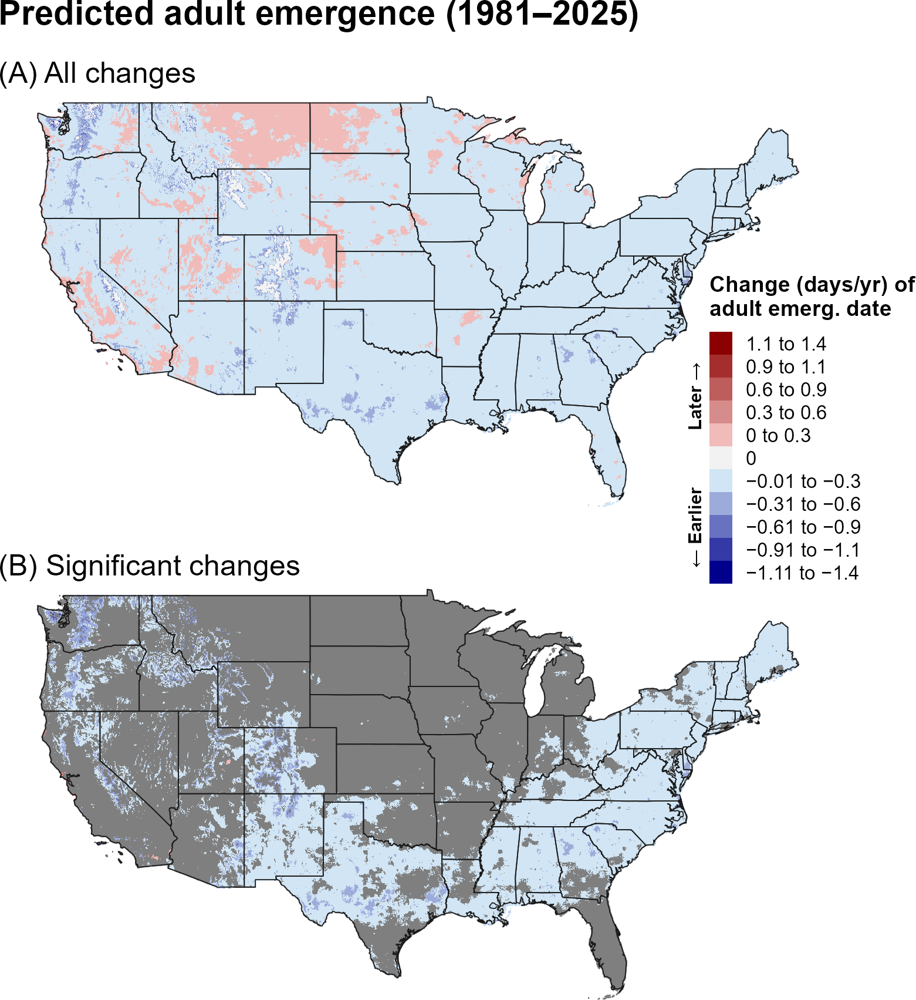
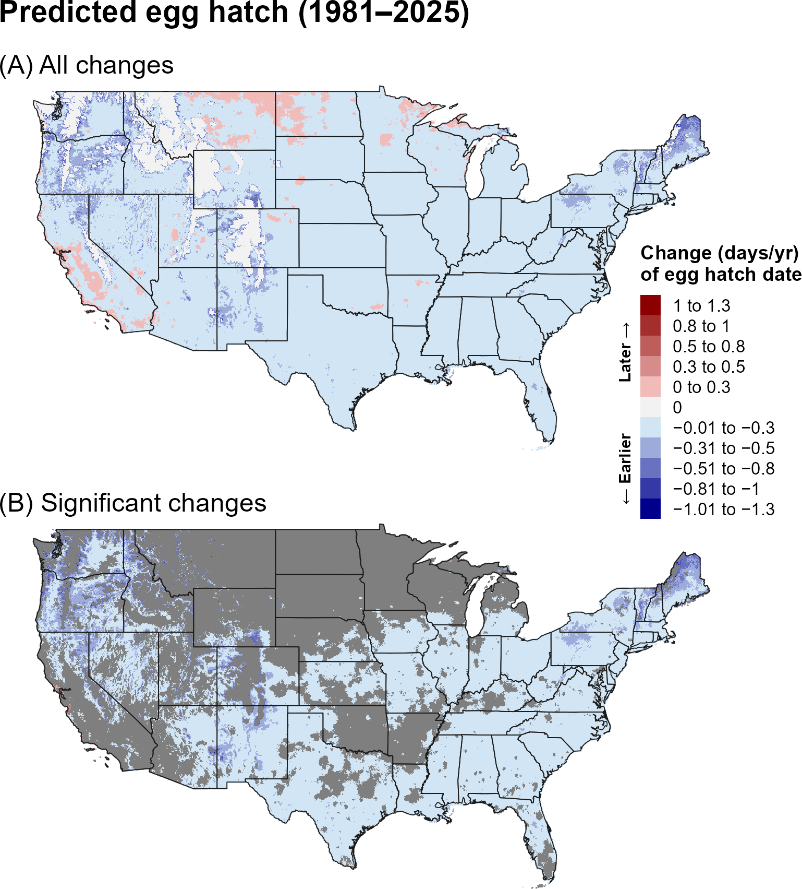
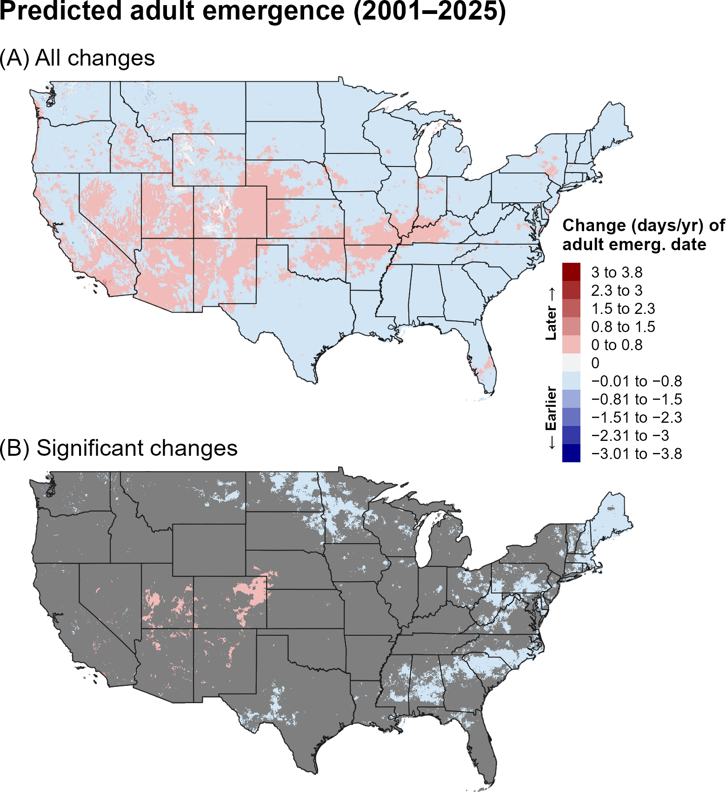
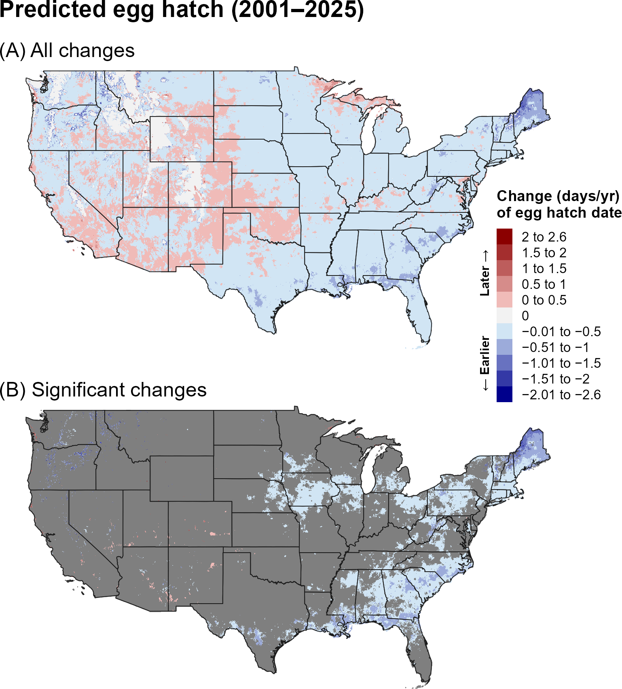
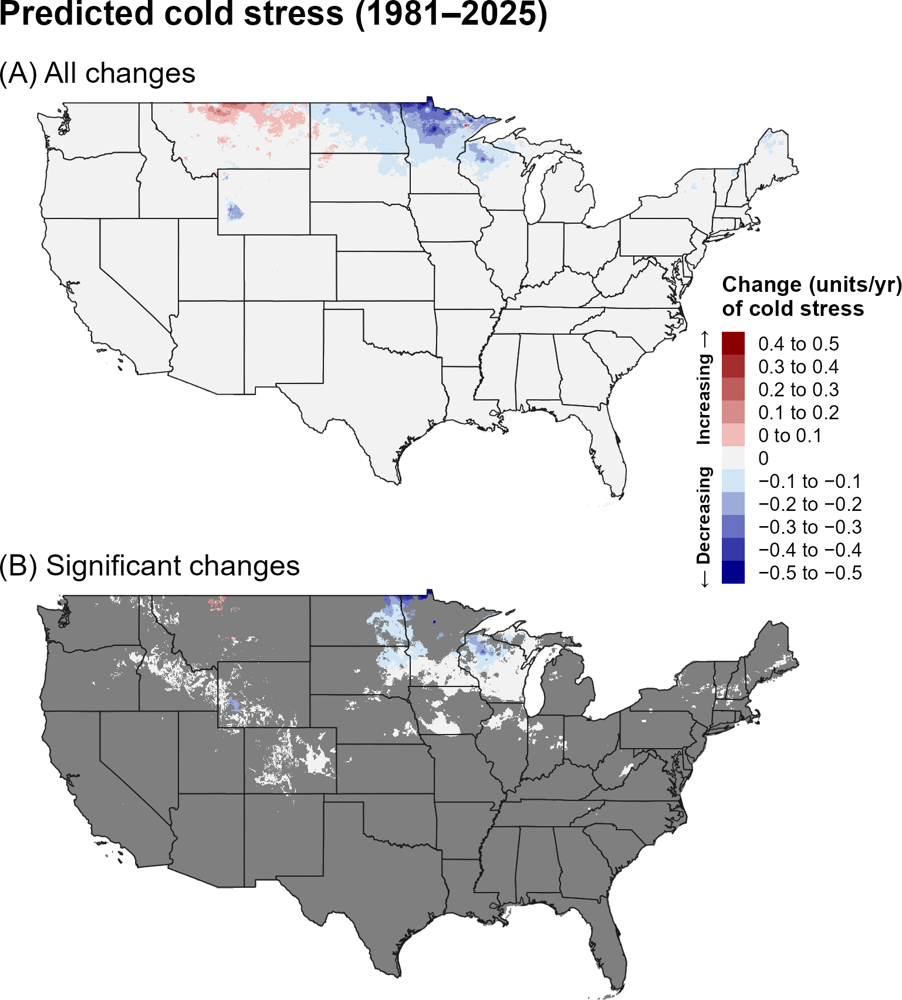
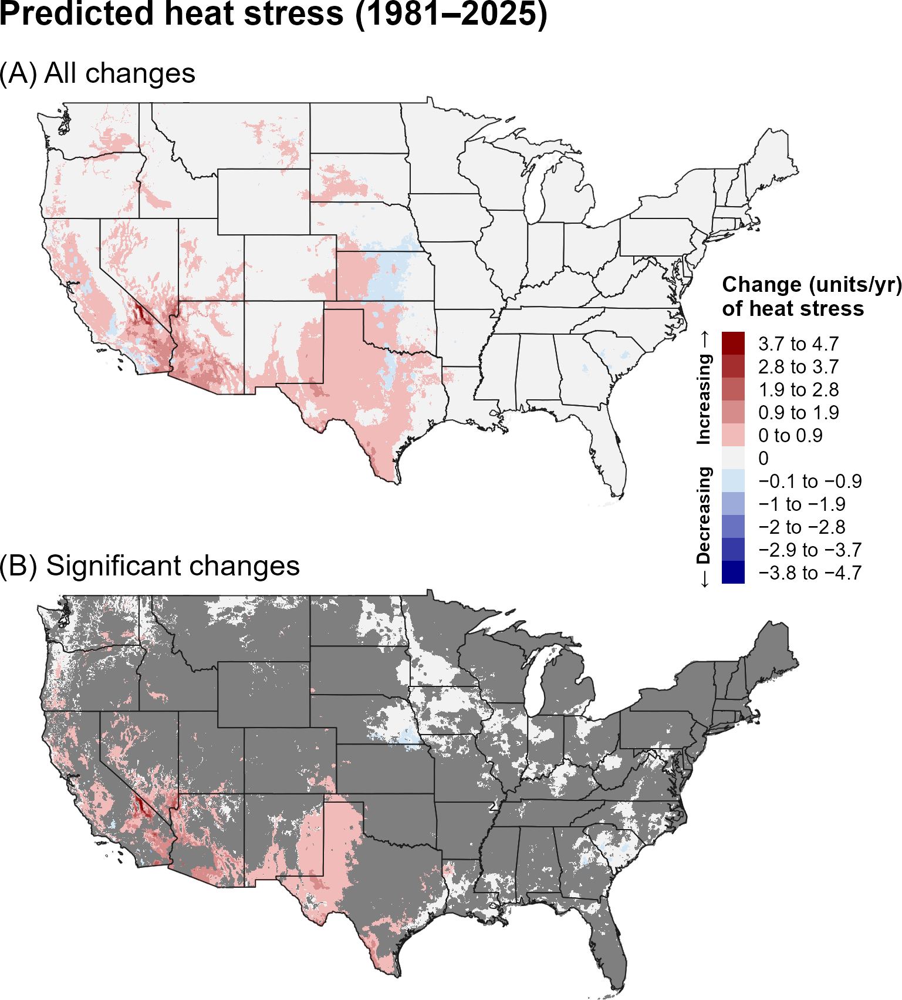
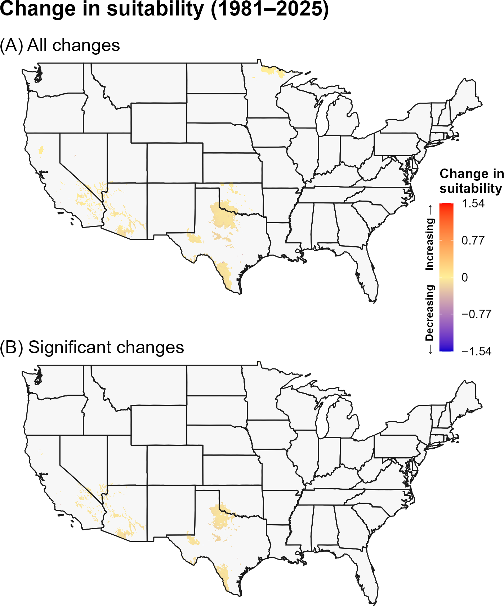
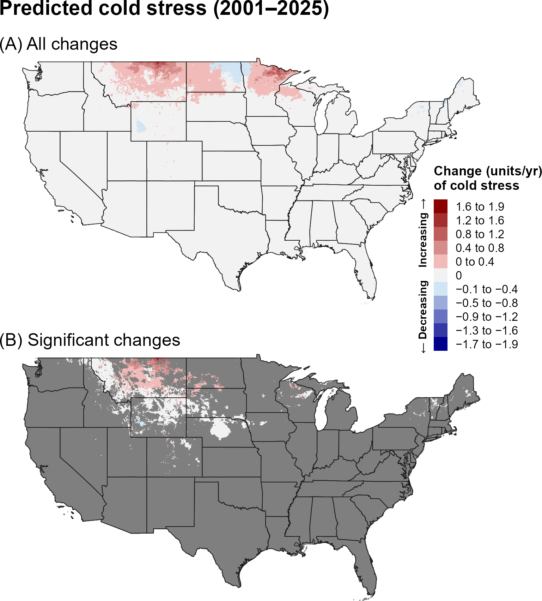
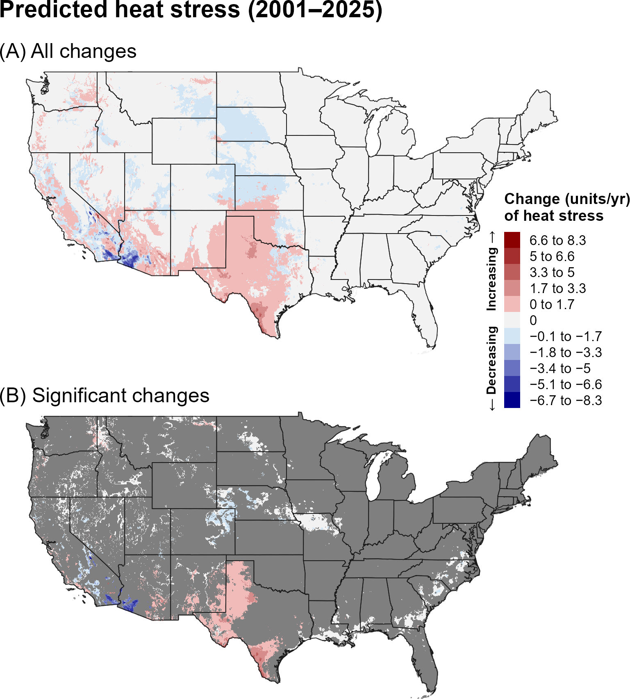
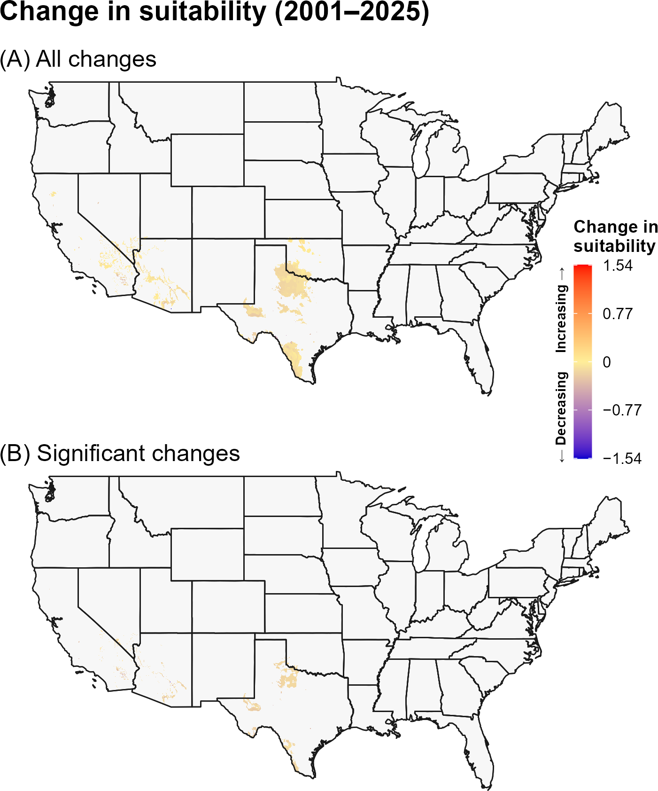

4A. Introduction
The emerald ash borer (EAB), Agrilus planipennis Fairmaire (Coleoptera: Buprestidae), is a flat-headed, wood-boring beetle native to eastern Asia that relies almost exclusively on ash trees (Fraxinus species) to complete its life cycle (Poland et al. 2015, USDA-APHIS 2025). It was first detected in North America in 2002 in Michigan and Ontario, although it likely arrived in Michigan during the early to mid-1990s (Siegert et al. 2014). EAB is now present in 37 U.S. states and six Canadian provinces (EPPO 2025, USDA-APHIS 2025). Adult beetles lay eggs in bark crevices, and upon hatching, larvae burrow into the tree to feed on the inner phloem, outer xylem, and cambium. They overwinter as larvae or pre-pupae within characteristic serpentine galleries beneath the bark (Tluczek et al. 2011, Poland et al. 2015). This feeding disrupts the tree’s ability to transport water and nutrients, typically leading to tree death within several years (Knight et al. 2013). EAB’s cryptic nature, in which all life stages except for the adult beetle are inside of trees, makes early detection of this pest extremely difficult (Haack et al. 2002, USDA-APHIS 2025).
Previous modeling studies indicated broad climatic suitability for EAB across North America that overlapped with the ranges of native Fraxinus species (DeSantis et al. 2013, Sobek-Swant et al. 2012, Liang & Fei 2014, , Barker et al. 2023). All North American ash species are vulnerable to EAB, though blue ash (F. quadrangulata Michaux) appears to be less preferred (Poland et al. 2015). In its native range, the beetle primarily infests stressed or weakened trees, whereas in North America it readily attacks both healthy and stressed individuals, with stressed trees often supporting higher beetle densities (Poland and McCullough 2006, Tluczek et al. 2011). Other members of the olive family, such as white fringetree (Chionanthus virginicus L.) and olive (Olea europaea L.), may also serve as hosts, though survival rates on these species appear to be lower (Rutledge and Arango-Velez 2017, Peterson and Cipollini 2020). The economic impact of EAB in the United States has reached billions of dollars, and the widespread loss of ash trees has led to reduced biodiversity and the degradation of important ecosystem services (Kovacs et al. 2010, Aukema et al. 2011, Schrader et al. 2021).
A model for EAB developed for the Degree-Day, establishment Risk, and Phenological event mapping system (DDRP) is operationalized to produce near real-time forecasts for the contiguous United States (CONUS) at https://uspest.org/DDRP. The full set of model parameters for EAB, including developmental temperature thresholds, degree-day requirements for individual life stages, and climate stress thresholds and limits, are available at USPest.org (Barker et al. 2023).
4B. Results
i. Phenology
Entire period: 1981–2025
Predicted adult emergence and egg hatch for JPB shifted significantly earlier across large portions of CONUS over the entire period (1981–2025), including most East Coast states and parts of the South and Intermountain West (Figure 1, Figure 2). In these regions, predicted adult emergence and egg hatch decreased by approximately 0.01–0.9 days per year, with some of the largest declines occurring at higher elevations in the Intermountain West. Significant changes were more spatially extensive for predicted egg hatch, encompassing much of the central United States.

Recent period: 2001–2025
Trends in predictions of first adult emergence and egg hatch for EAB over the recent 24-year period (2001–2025) were partially consistent with those observed over the 1981–2025 period. In the East, significant trends were similar in magnitude but less spatially extensive (Figure 3, Figure 4), whereas most trends in the West were not significant. In contrast to the longer-term trends, parts of the northern Great Plains showed significant shifts toward earlier adult emergence, whereas isolated areas of the interior West, primarily in the southern Intermountain West, exhibited significant trends toward later phenological events.


ii. Climatic suitability
Entire period: 1981–2025
Over the entire 44-year period (1981–2025), predicted cold stress for EAB decreased significantly across portions of the northern United States, particularly the Upper Midwest, although localized increases occurred in parts of Montana (Figure 5). During the same period, predicted heat stress increased significantly across parts of the South and West (Figure 6). When annual accumulated stress units exceed limits specified in DDRP models, climatic suitability may change. Significant shifts in climatic suitability for EAB were relatively limited, indicating that accumulated stress generally remained within the limits defining suitability. Increases in suitability were concentrated in portions of the Southwest (Figure 7).



Recent period: 2001–2025
Trends in climate stress for EAB over the recent 24-year period (2001–2025) differed in several respects. Predicted cold stress increased across portions of the Upper Midwest, with few areas showing significant decreases (Figure 8), contrasting with the widespread decreases observed over the longer period. Heat stress continued to increase across the Southwest and Lower Midwest but decreased in parts of the interior West, southern California, and Arizona (Figure 9). As during the longer period, changes in climatic suitability remained spatially localized, suggesting that recent shifts in cold and heat stress translated into relatively limited changes in predicted establishment suitability (Figure 10).



4C. Discussion
Predicted EAB phenology generally shifted toward earlier seasonal events, with the strongest and most spatially extensive trends occurring over the entire 44-year period (1981–2025). Predicted adult emergence and egg hatch occurred progressively earlier across portions of the East during both study periods, at rates of approximately 0.01–0.9 days per year. Because EAB is widely established across much of this region, these shifts have practical implications for monitoring and management. Pest managers may need to adjust the timing of seasonal activities to maintain their effectiveness. For example, traps targeting adult beetles may need to be deployed earlier in spring to improve early detection of new infestations, while release schedules for biological control agents, including the larval parasitoids Spathius agrili and S. galinae, may need to be adjusted to account for changes in host availability.
In contrast, significant trends toward later adult emergence and egg hatch occurred in parts of the Intermountain West during 2001–2025. These localized patterns may reflect regional differences in temperature trends and seasonal warming, which have not been spatially or seasonally uniform across the United States (NCEI 2021). However, further analysis of temperature trends during the study period is needed to determine whether these differences explain the predicted delays.
Trends in EAB’s phenology should be interpreted in light of some current limitations of the phenology model. First, the model predicts adult emergence solely from degree-day accumulation and does not account for the chilling requirements of overwintering J-larvae, which must receive sufficient winter chilling to terminate obligatory diapause before metamorphosis can begin (Duan et al. 2021, Duan et al. 2026). Because warmer chilling temperatures may delay adult emergence (Duan et al. 2026), the model may overestimate advances in emergence in warmer regions of the United States, including the South. Second, the model assumes a univoltine life cycle, whereas EAB can exhibit a semivoltine life cycle in cooler regions, overwintering as early instars and requiring a second summer of feeding before reaching the J-larval stage (Jones et al. 2019, Bohannon et al. 2022). This extended development may alter the timing and distribution of adult emergence relative to model predictions. Incorporating chilling requirements and regional variation in voltinism could therefore improve the accuracy of predicted phenological trends and their application to monitoring and biological control.
The limited changes in predicted climatic suitability across both time periods indicate that trends in cold and heat stress have not produced broad changes in predicted EAB establishment potential across the CONUS. Although decreasing cold stress across portions of the Upper Midwest could potentially enhance overwintering survival in EAB, it did not substantially increase predicted establishment potential in these regions. Conversely, increasing heat stress in the Southwest may constrain establishment in already warm regions, particularly where it overlaps with the ranges of native Fraxinus species. The lack of substantial increases in predicted suitability in the Upper Midwest is consistent with previous findings that only sufficiently extreme cold, such as that experienced in parts of northern Canada, is likely to limit EAB establishment through overwintering mortality (Venette et al. 2014, Barker et al. 2023). From a management perspective, these findings support continuing EAB surveillance across the CONUS rather than substantially narrowing surveillance efforts based on the observed trends in climatic suitability.
Our findings were broadly consistent with Barker et al. (2023), who reported geographically restricted trends toward earlier predicted first adult emergence of EAB over 2002–2021, including in parts of the Southeast, New England, and Upper Midwest. Our analysis also identified significant trends toward later adult emergence in parts of the interior West over 2001–2025. Both studies identified isolated areas of decreasing climatic suitability in the southwestern United States, consistent with increasing heat stress. Differences between the studies may partly reflect methodological differences, particularly our use of pre-whitening to account for temporal autocorrelation in the Mann–Kendall analysis. Pre-whitening reduces temporal autocorrelation to better satisfy the test’s assumption of independence among observations and can affect the magnitude and spatial extent of statistically significant trends (Kulkarni and von Storch 1995).
The stronger and more spatially extensive trends in predicted phenology and climate stress over the entire 44-year period may reflect both the larger sample size, which can reduce noise and improve detection of directional patterns, and differences in the underlying climate trends between the two time periods. In particular, the recent 24-year period may capture climate variability or regional trends that differ from those observed over the longer 44-year period. Thus, differences between the two periods should be interpreted as reflecting both long-term climate trends and shorter-term regional variability.
4D. References
Aukema, J. E., B. Leung, K. Kovacs, C. Chivers, K. O. Britton, J. Englin, S. J. Frankel, R. G. Haight, T. P. Holmes, A. M. Liebhold, D. G. McCullough, and B. von Holle. 2011. Economic impacts of non-native forest insects in the continental United States. PLoS ONE 6:e24587.
Barker, B. S., L. Coop, J. J. Duan, and T. R. Petrice. 2023. An integrative phenology and climatic suitability model for emerald ash borer. Frontiers in Insect Science 3:1239173.
Bohannon, G. R., C. L. Johnson, R. M. Jetton, and K. L. F. Oten. 2022. Phenology and voltinism of emerald ash borer (Coleoptera: Buprestidae) in Central North Carolina. Environmental Entomology 51:1077–1085.
DeSantis, R. D., Moser, W. K., Gormanson, D. D., Bartlett, M. G., & Vermunt, B. (2013). Effects of climate on emerald ash borer mortality and the potential for ash survival in North America. Agricultural and Forest Meteorology, 178–179, 120–128.
Duan, J. J., J. M. Schmude, and K. M. Larson. 2021. Effects of low temperature exposure on diapause, development, and reproductive fitness of the emerald ash borer (Coleoptera: Buprestidae): implications for voltinism and laboratory rearing. Journal of Economic Entomology 114:201–208.
Duan, J. J., T. R. Petrice, J. M. Schmude, and T. Hagerty. 2026. Temperature-dependent response of diapause termination in the emerald ash borer (Coleoptera: Buprestidae): implications for its geographic distribution. Journal of Economic Entomology 19:3111–3116.
EPPO. 2025. Agrilus planipennis. EPPO datasheets on pests recommended for regulation. Available online: https://gd.eppo.int (accessed 7 July 2025).
Haack, R., E. Jendek, H. Liu, K. Marchant, T. Petrice, T. Poland, and H. Ye. 2002. The emerald ash borer: a new exotic pest in North America. Newsletter of the Michigan Entomological Society 47:1–5.
Jones, M. I., J. R. Gould, H. J. Mahon, M. K. Fierke, and B. Sullivan. 2019. Phenology of emerald ash borer (Coleoptera: Buprestidae) and its introduced larval parasitoids in the northeastern United States. Journal of Economic Entomology 113:622–632.
Knight, K. S., J. P. Brown, and R. P. Long. 2013. Factors affecting the survival of ash (Fraxinus spp.) trees infested by emerald ash borer (Agrilus planipennis). Biological Invasions 15:371–383.
Kovacs, K. F., R. G. Haight, D. G. McCullough, R. J. Mercader, N. W. Siegert, and A. M. Liebhold. 2010. Cost of potential emerald ash borer damage in United States communities, 2009-2019. Ecological Economics 69:569–578.
Kulkarni, A., and H. von Storch. 1995. Monte Carlo experiments on the effect of serial correlation on the Mann-Kendall test of trend. Meteorologische Zeitschrift N.F 4:82–85.
Liang, L., and S. Fei. 2014. Divergence of the potential invasion range of emerald ash borer and its host distribution in North America under climate change. Climatic Change 122:735–746.
MacDonald, B., R. Baydack, A. R. Westwood, and D. Walker. 2022. Predicting emerald ash borer adult emergence and peak flight activity in Winnipeg, Manitoba, Canada. Frontiers in Ecology and Evolution 10:846144.
National Centers for Environmental Information (NCEI). 2021. U.S. Climate Normals. National Oceanic and Atmospheric Administration, National Centers for Environmental Information. Available online: https://www.ncei.noaa.gov/products/land-based-station/us-climate-normals (accessed 7 October 2026).
Peterson, D. L., and D. Cipollini. 2020. Larval performance of a major forest pest on novel hosts and the effect of stressors. Environmental Entomology 49:482–488.
Poland, T. M., Y. Chen, J. Koch, and D. Pureswaran. 2015. Review of the emerald ash borer (Coleoptera: Buprestidae), life history, mating behaviours, host plant selection, and host resistance. Canadian Entomologist 147:252–262.
Poland, T. M., and D. G. McCullough. 2006. Emerald ash borer: invasion of the urban forest and the threat to North America’s ash resource. Journal of Forestry 104:118–124.
Rutledge, C. E., and A. Arango-Velez. 2017. Larval survival and growth of emerald ash borer (Coleoptera: Buprestidae) on white ash and white fringetree saplings under well-watered and water-deficit conditions. Environmental Entomology 46:243–250.
Schrader, G., R. Baker, Y. Baranchikov, L. Dumouchel, K. S. Knight, D. G. McCullough, M. J. Orlova-Bienkowskaja, S. Pasquali, and G. Gilioli. 2021. How does the emerald ash borer (Agrilus planipennis) affect ecosystem services and biodiversity components in invaded areas? EPPO Bulletin 51:216–228.
Siegert, N. W., D. G. Mccullough, A. M. Liebhold, and F. W. Telewski. 2014. Dendrochronological reconstruction of the epicenter and early spread of emerald ash borer in North America. Diversity and Distributions 20:847–858.
Sobek-Swant, S., D. A. Kluza, K. Cuddington, and D. B. Lyons. 2012. Potential distribution of emerald ash borer: What can we learn from ecological niche models using Maxent and GARP? Forest Ecology and Management 281:23–31.
Tluczek, A. R., D. G. McCullough, and T. M. Poland. 2011. Influence of host stress on emerald ash borer (Coleoptera: Buprestidae) adult density, development, and distribution in Fraxinus pennsylvanica trees. Environmental Entomology 40:357–366.
USDA-APHIS. 2025. Emerald ash borer. United States Department of Agriculture, Animal and Plant Health Inspection Service, Washington D.C. Available online: https://www.aphis.usda.gov/plant-pests-diseases/eab (accessed on 5 December 2025).
Venette, R., L. Christianson, and M. Abrahamson. 2014. Cold snap is no snow day for emerald ash borer management. In Biological and Environmental Influences on Forest Health and Productivity. 6. Delaware, OH: United States Department of Agriculture, Forest Service, Northern Research Station.